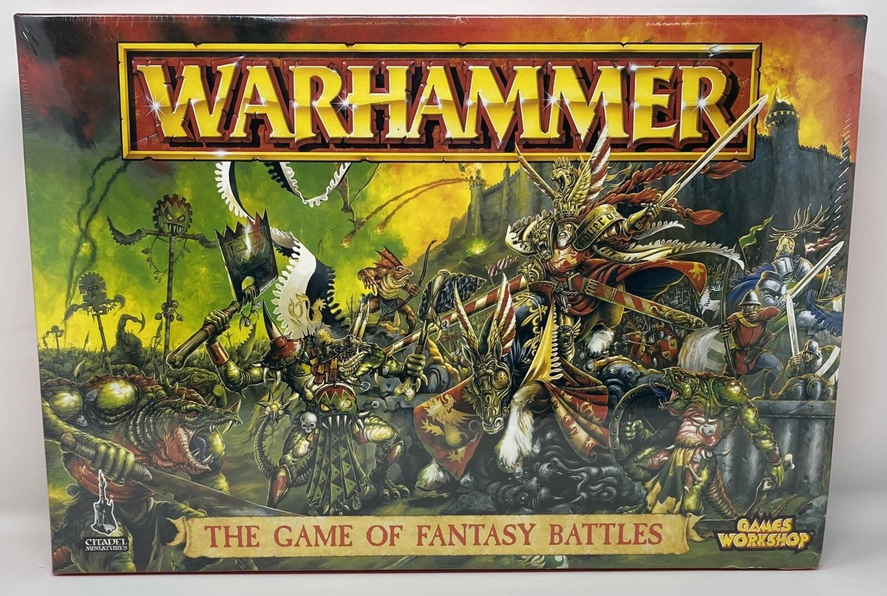

Que 2026 iba a ser un año importante para el Warhammer Fantasy competitivo ya se intuÃa, pero que España iba a ser la gran protagonista era difÃcil de predecir. Games Workshop anunció en febrero que el World Championships of Warhammer 2026 se celebrará en Barcelona, en la Fira de Barcelona, del 3 al 6 de diciembre. Es la primera vez en la historia del torneo que el WCW abandona su sede habitual en Atlanta para cruzar el Atlántico. El motivo oficial: el equipo español empató el primer puesto en la última edición, y llevar el campeonato a España es un reconocimiento a esa actuación histórica. De fondo, la comunidad también apunta a que varios jugadores clave de EE.UU. rechazaron sus Golden Tickets de clasificación citando el clima polÃtico del paÃs, algo que GW no puede ignorar si quiere un campeonato verdaderamente global.
Antes del WCW llega el World Team Championship Clash of Nations 2026, que se celebrará en septiembre en Talavera de la Reina. El WTC es el campeonato de selecciones nacionales del juego: cada paÃs presenta un equipo de ocho jugadores y un capitán que gestiona el emparejamiento de ejércitos antes de cada ronda —un sistema de drafting estratégico que añade una dimensión táctica única que no existe en el circuito individual—. El año pasado, en Alemania, participaron 18 naciones. Este año en España la organización espera superarlo. Hay también un World Singles Championship para quienes quieran competir individualmente sin necesidad de un equipo completo.
Para la comunidad española de The Old World, tener dos eventos mundiales en casa en el mismo año es histórico. España cuenta con uno de los circuitos competitivos de Warhammer Fantasy más sólidos de Europa, activo desde mucho antes del relanzamiento del juego en 2024. El WCW de Barcelona incluye además los torneos de Warhammer 40.000, Age of Sigmar, Kill Team y Underworlds, lo que lo convierte en el evento Warhammer más grande del año. Que GW elija el paÃs para semejante cita dice mucho del peso que tiene la comunidad friki española en el panorama competitivo internacional.
El calendario queda marcado: septiembre en Talavera para el WTC Clash of Nations, y diciembre en la Fira de Barcelona para el WCW. Hay que preparar los ejércitos, que el Viejo Mundo viene a casa.